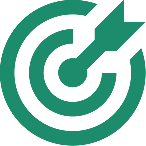

um pouco sobre nós
Com as dificuldades ambientais que estamos enfrentando com efeito estufa e outros fenômenos da natureza a empresa Volksvagem compreendeu a necessidade urgente de criar soluções para resolver parte do vilão que contribuem para estes problemas e desenvolver no tocante social e econômico. Com a convicção de poder acelerar a mudança de cenário reuniu parceiros e doadores para com objetivos de desenvolvimento sustentável. Dessa forma Eco System & Recycle nasceu da necessidade por soluções que acelerem iniciativas de forma rápida e orgânica tornando se empresa de impacto socio ambiental.
missão
Investimentos industriais e financeiros, trazendo a sustentabilidade financeira e o impacto positivo ao meio ambiente para sociedade através da tecnologia.
visão

Melhorar a situação socioeconômico e do meio ambiente, para garantir que, sejam atendidos de acordo com as metas dos objetivos do desenvolvimento sustentável e das boas práticas ESG (governança ambiental, social e corporativa).
valores

Melhorar a situação socioeconômico e do meio ambiente, para garantir que, sejam atendidos de acordo com as metas dos objetivos do desenvolvimento sustentável e das boas práticas ESG (governança ambiental, social e corporativa).